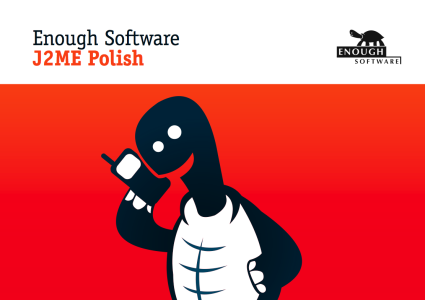

J2ME Polish is the answer to today's challenges in the mobile world. Extremely versatile and powerful, yet easy to use!
2008-02-10 We could call J2ME Polish 2.0 "3.0" if we weren't so modest. Along with great new features we've updated to complete documentation, so that know what you can create with J2ME Polish. Download J2ME Polish 2.0 now.
Meet us on the Mobile World Congress
in February 11 - 14 2008 in Barcelona! Visit us in Hall 7, Booth #7A43.
Visitors will be able to obtain J2ME Polish licenses with a discount of 10%!
Send an email to mwc08@enough.de for
entering a draw to get
free guest passes to the congress! Please state your full name and your company's name in the email.
The 3 winners will be contacted until the 4th of February by us. And of course we won't sell,
rent or do anything bad with your addresses.
2007-10-22: Find our new interactive device datbase at http://devices.j2mepolish.org. Please report any issues by sending an email to devices(at)enough(dot)de.
| Please visit us on the CTIA Wireless I.T. & Entertainment in October 2007 in San Francisco! We are present on our partner's Tira Wireless booth #1250. Visitors will be able to obtain J2ME Polish licenses with a discount of 20%! |
 |
Learn how to visually develop mobile applications with J2ME Polish and NetBeans on the Java One 2007 in San Francisco, Technical Session 9452! |
J2ME Polish is a suite of tools and technologies aimed at mobile developers and companies within the mobile space.
Main features of J2ME Polish include:

J2ME Polish is a stable & complete solution for Windows, Linux and Mac OS X. With more than 600,000 downloads, J2ME Polish is the de-facto standard for developing mobile Java applications. Please download the latest version (J2ME Polish <%= PolishVersion %>).
J2ME Polish is available under the Open Source license GPL as well as under commercial licenses.
| J2ME Polish is OSI Certified Open Source Software. OSI Certified is a certification mark of the Open Source Initiative. | J2ME Polish is hosted on berliOS. | J2ME Polish is linked on java.net. | ||

|
|
<%include end.txt %>